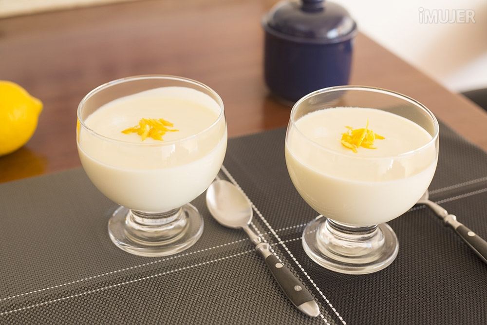

Es un postre frío con una textura increíblemente sedosa, aérea y cremosa. Lo mágico de esta receta es el contraste de sabores: la intensidad cítrica y ácida del limón fresco equilibra a la perfección el dulzor de la leche condensada, logrando un balance que no empalaga para nada. Es el típico postre "limpiador de paladar", ideal para cerrar con broche de oro una comida pesada porque se siente sumamente ligero, fresco y elegante a pesar de su extrema sencillez.